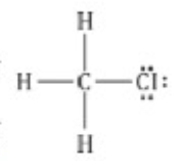
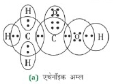
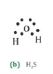
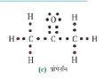

एथेन का आण्विक सूत्र -C2H4 है |इसमें :
(a) 6 सहसंयोजक आबंध है
(b) 7 सहसंयोजक आबंध है
(c) 8 सहसंयोजक आबंध है
(d) 9 सहसंयोजक आबंध है
(b) 7 सहसंयोजक आबंध है
ब्युतेनान चर्तु- कार्बन योगिक है जिसका प्रकार्यत्मक समूह
(a) कर्बोक्सिलिक अम्ल
(b) एलडीहाइड
(c) किटोंन
(d) ऐल्कोहोल
(c) किटोंन
खाना बनाते समय यदि बर्तन का तली काली हो रही है तो इसका मतलब है की
(a) भोजन पूरी तरह से नहीं पका है
(b) ईंधन पूरी तरह से नहीं जल रहा
(c) ईंधन आर्द्र है
(d) ईंधन पूरी तरह से जल रहा है
(b) ईंधन पूरी तरह से नहीं जल रहा
CH3Cl में आबंध निर्माण का उपयोग कर सहसंयोजक आबंध की प्रकृति समझाइए
CH4 सबसे सरल हाईड्रोकार्बन मिथेन का आण्विक सूत्र है लेकिन जब मिथेन मेसे एक हाइड्रोजन की क्लोरिन
द्वारा विस्थापित किया जाता है तो क्लोरोमिथैन (CH3Cl) प्राप्त होता है | यंहा कार्बन के तीन इलेक्ट्रान हाइड्रोजन के एक एक एलेक्ट्रान
से साझेदारी करके टिन बंध बनाती है | कार्बन का चौथा इलेक्ट्रान क्लोरिन के साथ बंध बनाकर अपना कोष पूरा करता है

इलेक्ट्रान बिंदु संरचना बनाइए :
(a) एथेनाइक अम्ल
(b) H2S
(c) प्रोपेनोंन
(d) F2



समजातीय श्रेणी क्या है ? उदहारण के साथ समझाइए
योगिक की एक एसी श्रृंखला जिसमे कार्बन श्रृंखला में स्थित हाइड्रोजन को एक ही प्रकार का प्रकार्यक समूह को प्रतिस्थापित करने की विधि को समजातीय
श्रेणी कहते है
जैसे : CH2OH, CH3CH2OH आदि एल्कोहल की समजातीय श्रेणी है
भोतिक एंव रासायनिक गुणधर्मो के आधार पर एथनाल एंव एथेनाइक अम्ल में आप केसे अंतर करेंगे
| एथनाल(भौतिक गुणधर्म) | एथेनाइक अम्ल (भौतिक ) |
|---|---|
| इसमें शराब जैसी अल्कोहल गंध आता है | इसमें सिरके जैसी गंध आता है |
| इसका स्वाद खट्टा नहीं होता | इसका स्वाद खट्टा होता है |
| यह ज्वलनशील है | यह अज्वानालाशील है |
| इसका कथनांक 78.2oC है | इसका कथनांक 118oC है |
| एथनाल (रासायनिक) | एथेनाइक अम्ल (रासायनिक ) |
| यह लिटमस के प्रति उदासीन है | यह नीले लिटमस को लाल कर देता है |
| यह सोडियम हाईड्रोकसाईंड के साथ अभिक्रिया नहीं करता है | यह सोडियम हाईड्रोकसाईंड के साथ अभिक्रिया करता है |
जब साबुन को जल में डाला जाता है तो मिसेल का निर्माण क्यों होता है ? क्या एथनाल जैसे दुसरे विलायको में भी मिसेल का निर्माण होता है
जब हम साबुन या किसी भी अपमार्जक को पानी में मिलते है तो इनके अणु परस्पर एकत्रित होकर गुच्छो का रूप धारण ले लेता है , जिसे मिसेल कहते है
|इसमें एक हाईड्रोकार्बन पूंछ एंव एक ऋणात्मक सिरहोता है | इस मिसेल में पूछे अन्दर की और चिपकी रहती है एंव सिर बाहर की और इंगित करता है |
हाईड्रोकार्बन जल विरोधी तथा सिर जलरागी स्वभाव का होता है | नहीं , एथेनाल जैसे दुसरे विलयको में मिसेल का निर्माण नहीं होता है क्यूंकि ये धुर्वीय विलायक नहीं है
कार्बन एंव उसके योगिक का उपयोग अधिकतर अनुप्रयोग में ईंधन के रूप में क्यों किया जाता है ?
कार्बन एंव उसके योगिक अधिकतर अनुप्रयोग में इंधन के रूप में इसलिए किया जाता है की अधिकांश कार्बन योगिक को जलने पर हमें प्रचुर मात्रा में ताप एंव
प्रकाश की प्राप्ति होती है | जब हम कार्बन को आक्सीजन की उपस्थिति में जलते है तो ताप एंव प्रकाश के साथ कार्बनडाईआक्साइड उत्पन्न करता है अत : कार्बन योगिक
को इंधन के रूप में प्रयोग किया जाता है |
कठोर जल को साबुन में उपचारित करने पर झाग के निर्माण को समझाइए
जब हम कठोर जल में साबुन मिलते है तो साबुन में मैग्नेशियम लवणों से अभिक्रिया करता है जिसमे मिश्किल से झाग उत्पन्न होता है एंव कुछ अधुलानीय प्रदार्थ का निर्माण होता है
यदि आप लिटमस पत्र (लाल एंव नीला ) से साबुन की जाँच करे तो आपका प्रेक्षण क्या होगा ?
साबुन में लम्बी हाइड्रोकार्बन श्रृंखला युक्त क्षार होता है जो लाल लिटमस को नीला कर देता है
हाईड्रोजनिकरण क्याव है ? इसका औद्योगिक अनुप्रयोग क्या है ?
असंतृप्त हाइड्रोकार्बन को पैलेडियम अथवा निकेल जैसे उत्प्रेरको की उपस्थिति में हाइड्रोजन गैस गुजर कर संतृप्त हाइड्रोकार्बोन बनाने की प्रक्रिया को हाइड्रोजनिकरण
कहते है अत: वनस्पति घी को हाइड्रोजनिकरण द्वारा वनस्पति तेलों का निर्माण किया जाता है
दिए गए हाईड्रोकार्बन : C2H6, C3H8, C3H6, C2H2,
एंव CH4 में किस्मे संकलन अभिक्रिया होती है ?
असंतृप्त हाइड्रोकार्बन में संकलन अभिक्रिया होती है, C2H6 और C2H2 हाइड्रोकार्बन है अत: इनमे संकलन अभिक्रिया
होगी
साबुन की सफाई प्रक्रिया की क्रियाविधि समझाइए
जब हम साबुन या किसी भी अपमार्जक को पानी में मिलाते है तो इनके परस्पर एकत्रित होकर गुच्छो का रूप धारण कर लेता है| जब हम जल को हिलाते है
तो तेलिय गंदगी ऊपर उठने का प्रयास करते है और यह छोटे छोटे टुकडो में वियोजित हो जाते है तथा इस प्रकार दुसरे अपमार्जक अनुओ की पूछो को तेल से
चिपकाने का अवसर प्रदान होता है | अब इस विलियन में छोटी छोटी तेलिय गोलिकाए चारो तरफ अपमार्जक अणुओ से घिर जाता है एंव परस्पर संयुक्त होकर
पूछ बनाने में वांछित रह जाता है अत: इस प्रकार हम साबुन की सफाई प्रक्रिया द्वारा वस्तु से तैलीय गंदगी से दूर कर देते है